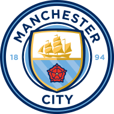

Manchester Siti Futbol Klubi Manchester shahrida joylashgan ingliz professional futbol klubi boʻlib, Angliya futbolining eng yuqori ligasida ishtirok etadi. 1880-yilda "Sent-Mark" (West Gorton) nomi bilan asos solingan boʻlib, ular 1887-yilda "Ardwick" assotsiatsiyasi va 1894-yilda "Manchester Siti" futbol klubiga aylanishgan. Klubning uy maydoni Manchester sharqidagi „Siti of Manchester“ stadioni boʻlib, ular 2003-yilda u yerga koʻchib oʻtishgan. „Manchester Siti“ 1894-yilda, hozirgi nomi bilan birinchi mavsumda oʻzining osmon moviy uy liboslarini qabul qilgan[4]. Oʻz tarixi davomida klub toʻqqizta liga gʻolibi, yettita Angliya kubogi, sakkizta Liga kubogi, oltita FA Community Shields, bir UEFA Chempionlar Ligasi, bir marta Yevropa kubogi gʻoliblari kubogi va bir marta UEFA Superkubogini qoʻlga kiritgan.
Bosh menyu